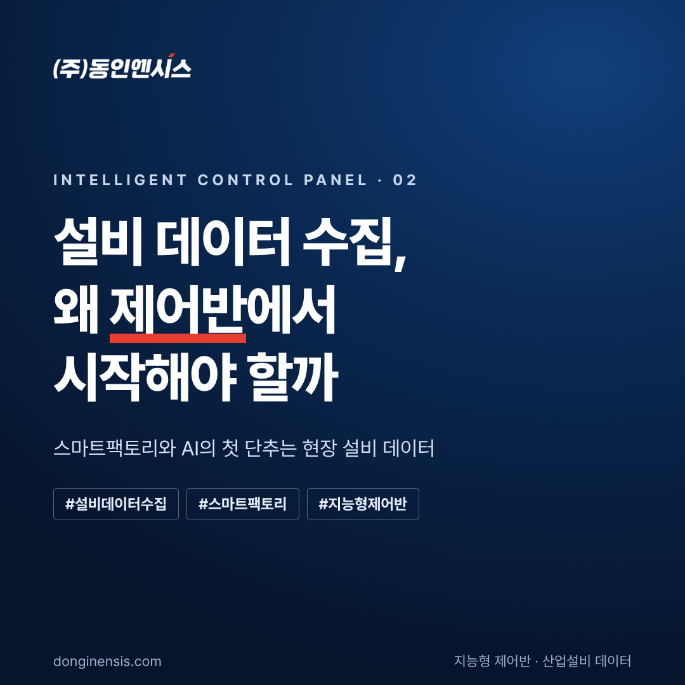
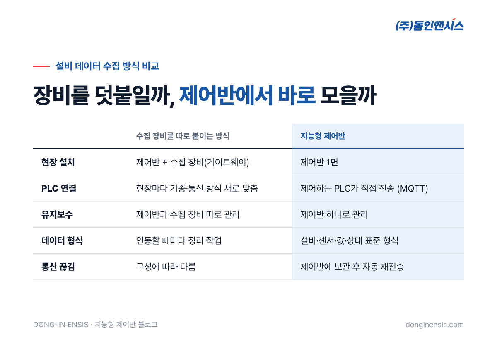
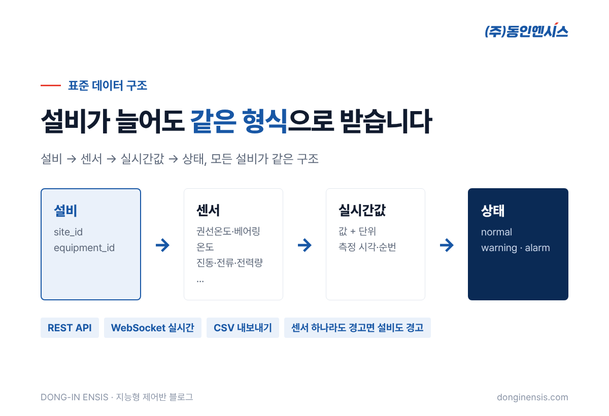
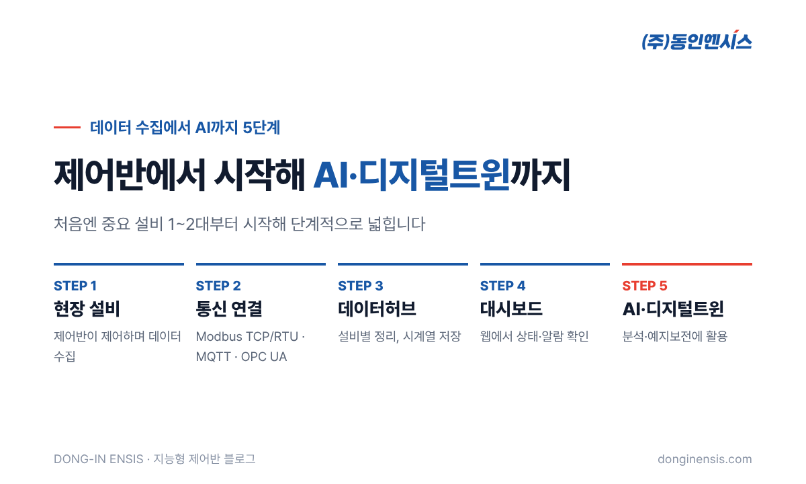

① 제목
② 본문 — [본문 복사] 후 스마트에디터에 붙여넣고, 파란 상자 자리에 images 폴더의 그림을 끌어다 놓으세요. 노란 상자가 있으면 [프롬프트 복사] → ChatGPT로 사진을 만들어 그 자리에 넣으세요

스마트팩토리, AI 예지보전, 디지털트윈. 요즘 제조 현장에서 자주 듣는 말들입니다. 그런데 이 모든 것에는 공통된 출발점이 있습니다. 바로 설비 데이터 수집입니다. 이 글에서는 설비 데이터를 어디서부터 모아야 하는지, 그리고 왜 제어반이 가장 확실한 출발점인지 정리해 보겠습니다.
데이터는 이미 있습니다, 다만 밖으로 나오지 않을 뿐
공장의 펌프, 송풍기, 압축기는 대부분 PLC와 인버터로 제어됩니다. 모터에 전류가 얼마나 흐르는지, 회전속도가 얼마인지 같은 정보는 이 제어 장치 안에서 매 순간 오가고 있습니다.
문제는 이 정보가 제어반 밖으로 잘 나오지 않는다는 점입니다. 제어반은 원래 설비를 움직이기 위해 만들어졌지, 데이터를 내보내기 위해 만들어진 장치가 아니기 때문입니다. 그래서 설비 상태를 알고 싶으면 사람이 현장을 돌며 확인하거나, 데이터를 모으는 장비를 따로 붙여야 했습니다.

수집 장비를 덧붙이는 방식에서 생기는 일
데이터 수집용 장비(게이트웨이)를 따로 붙이는 방식도 분명 방법입니다. 하지만 현장에서는 몇 가지 어려움이 반복됩니다.
- 현장마다 다른 PLC 기종과 통신 방식: 공장마다, 설비마다 PLC 제조사와 통신 방식이 달라 연결 작업을 매번 새로 해야 합니다.
- 장비 유지보수 부담: 제어반과 별도로 수집 장비를 관리해야 하고, 문제가 생기면 어디서 끊겼는지 찾기가 어렵습니다.
- 프로젝트 지연: 이런 이유로 MES나 AI를 도입하려던 스마트팩토리 프로젝트가 데이터 연결 단계에서 멈추는 경우가 많습니다.
동인엔시스 백민기 대표는 이렇게 말합니다. "AI와 스마트팩토리가 제 역할을 하려면 현장 설비 데이터가 우선 확보되어야 한다."

제어반에서 바로 모으면 달라지는 것
지능형 제어반은 설비를 제어하는 바로 그 자리에서 데이터를 함께 수집합니다. 모터 권선온도, 베어링 온도, 회전속도, 전압·전류·전력량, 진동 같은 값을 24시간 기록하고, MQTT 통신으로 클라우드나 고객사 서버에 직접 보냅니다. 현장에는 제어반 1면만 설치하면 되고, 별도 수집 장비가 필요 없습니다.
데이터 형식도 처음부터 맞춰서 보냅니다. 설비마다 고유 번호를 붙이고, 센서마다 값·단위·상태(정상·경고·알람)를 같은 형식으로 정리합니다. 그래서 설비가 늘어나도 데이터를 받는 쪽에서 연동 작업을 새로 할 필요가 없습니다.

이미 다른 회사 PLC가 설치된 현장이라면 어떻게 할까요? 이 경우에는 기존 PLC의 데이터를 읽기만 합니다. OPC UA, Modbus TCP 같은 표준 통신을 우선 검토하고, 현장에 맞는 방식을 정합니다. 설비의 인터록과 최종 제어는 언제나 현장 PLC가 맡고, 서버는 설비를 직접 제어하지 않습니다.
데이터 수집 다음 단계까지 한 번에
동인엔시스는 설비 데이터 수집을 다섯 단계로 연결합니다.
- 현장 설비: 제어반이 설비를 제어하며 데이터 수집
- 산업통신 연결: Modbus TCP/RTU, MQTT, OPC UA로 안전하게 전송
- 데이터 통합관리: 데이터허브에 설비별로 정리해 시간 순서대로 저장
- 웹 모니터링: 대시보드에서 설비 상태와 알람 확인
- AI·디지털트윈: 쌓인 데이터를 분석과 예지보전에 활용

처음부터 다섯 단계를 모두 갖출 필요는 없습니다. 중요한 설비 1~2대에서 데이터를 모으기 시작하고, 효과를 확인하며 넓혀 가는 방식을 권합니다.

정리하면
설비 데이터 수집은 스마트팩토리의 첫 단추입니다. 데이터는 이미 제어반 안에 있습니다. 그렇다면 그 데이터를 가장 정확하게, 가장 적은 장비로 꺼낼 수 있는 곳도 제어반입니다. 동인엔시스는 1991년부터 산업·선박 현장의 제어반을 직접 설계·제작해 온 경험으로, 제어반을 설비 데이터의 출발점으로 만들고 있습니다.
우리 공장 설비에서 어떤 데이터를 모을 수 있을지 궁금하시다면, 홈페이지에서 적용 가능성 진단을 신청해 보세요. 영업일 기준 1~2일 안에 담당 엔지니어가 연락드립니다.
문의: 051-862-3668 / dongin@donginmne.com
✍ 직접 한두 문장 덧붙이기 (권장)
아래 질문 중 하나에 실제 경험으로 답해 본문 적당한 곳에 넣어 주세요. 사람이 직접 쓴 문장이 들어가면 네이버에서 저품질 위험이 줄고 노출에 도움이 됩니다.
- 데이터 수집 장비를 따로 붙였다가 유지보수로 고생한 현장을 본 적이 있다면?
- IT기업과 협업할 때 데이터 연결 단계에서 가장 자주 막히는 부분은?
- 고객이 '어떤 데이터부터 모아야 하나요?'라고 물으면 보통 뭐라고 답하나요?
③ 태그
발행 전 확인
- 수치·고객사·인증 표기가 회사 자료와 같은지 확인 (아래 사실 확인 목록)
- 파란 상자 자리에 images 폴더의 그림 넣기 (01-cover.png가 대표 이미지)
- 담당자 한마디: 실제 경험 1~2문장 직접 덧붙이기 (미리보기 하단 질문 참고, 저품질 방지에 가장 효과적)
- 붙여넣은 뒤 모바일 미리보기로 줄바꿈·글자 크기 확인
- 실제 현장·제작 사진이 있으면 연출 이미지 대신 넣기 (노출에 가장 좋음)
- 고객사 이름·현장 사진 공개가 계약상 문제없는지 확인
- 본문 끝 홈페이지 링크가 눌리는지 확인
- 태그 입력 후 발행 (매일 비슷한 시간에, 예약 발행 활용)
- 사실 확인: 대표 발언 인용: "AI와 스마트팩토리가 제 역할을 하려면 현장 설비 데이터가 우선 확보되어야 한다" (2026.10 보도자료)
- 사실 확인: IT기업 프로젝트가 멈추는 원인: PLC 기종·통신 방식 차이, 게이트웨이 유지보수 부담 (2026.10 보도자료)
- 사실 확인: 기존 타사 PLC는 읽기 전용, OPC UA·Modbus TCP 우선 검토
- 사실 확인: 솔루션 5단계 구조와 지원 통신(Modbus TCP/RTU, MQTT, OPC UA)
- 사실 확인: 설비 1~2대부터 시작, 1991년 설립